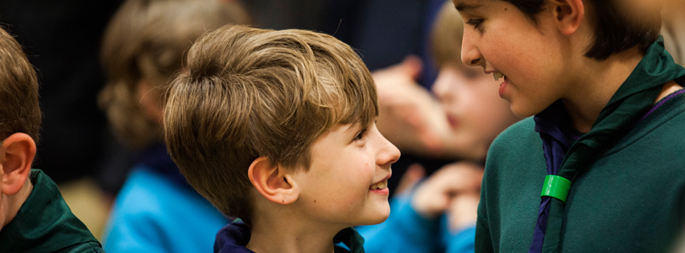

Twitter is a great way to show the public your activities - in 140 characters or less! Here are some top tips and handy reminders:
Like Facebook, keep it short and sweet. 140 Character Limit!
Your Twitter profile, and tweets, will be publicly viewable - by everyone, not just followers.
To reach the maximum audience, post during evenings or at weekends.
Create a short and memorable Twitter handle (username), such as @HampshireScouts.
A picture paints a thousand words. Be creative! Be on brand! Show your section having fun - see the Photography page. Always ensure you have photo consent.
Retweet relevant content! Follow the Official Scout Accounts, as well as other people within Scouting, and retweet any relevant content to your followers.
Use Hashtags! Hashtags are a way of gaining more visibility to your tweets; People can search for a hashtag and see all tweets that use it - so use it wisely! For Example: "Time for a #Cubs100 Party!" Now, everyone that searches for #Cubs100 will be able to see that tweet!
Look for 'Official Hashtags' being used at major events, such as #YouShape or #Cubs100.
Mention relevant people. For example, if a leader at 1st Anywhere Scout Troop Tweets: "We're an awesome time hiking in the New Forest" - they could tweet their District or even County, which could potentially be retweeted, increasing your impressions.
Twitter is a great tool for interacting with externals, for example: Other local charities, businesses or even the press.
It is also a great point of reference for parents - they can keep track of your adventures and keep in touch!
Use Twitter Analytics. Head over to analytics.twitter.com to see your Impressions (views), followers and mentions, all presented in a Dashboard view.
If allowing a number of people to tweet (especially Young People), it is a good idea to ask them to sign off their tweet with their initials, so that you can keep track of their tweets, and the public can see that a Young Person is tweeting. Example: "Having an awesome time at #YouShape! -TB"